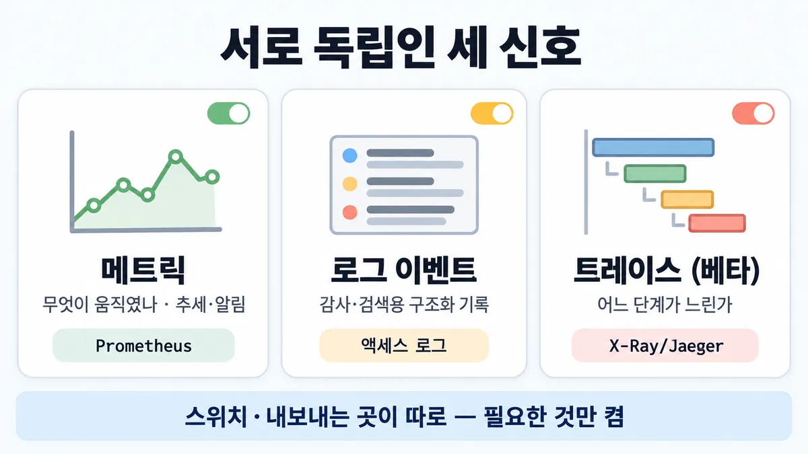
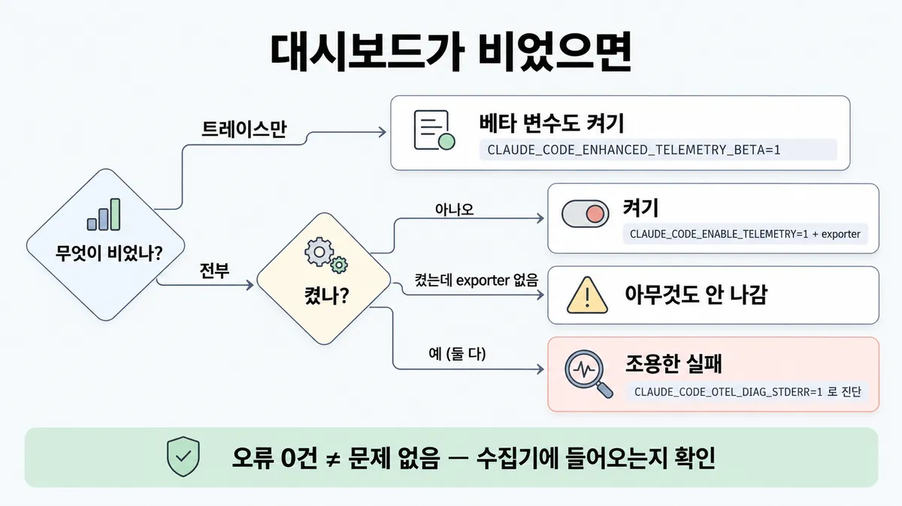
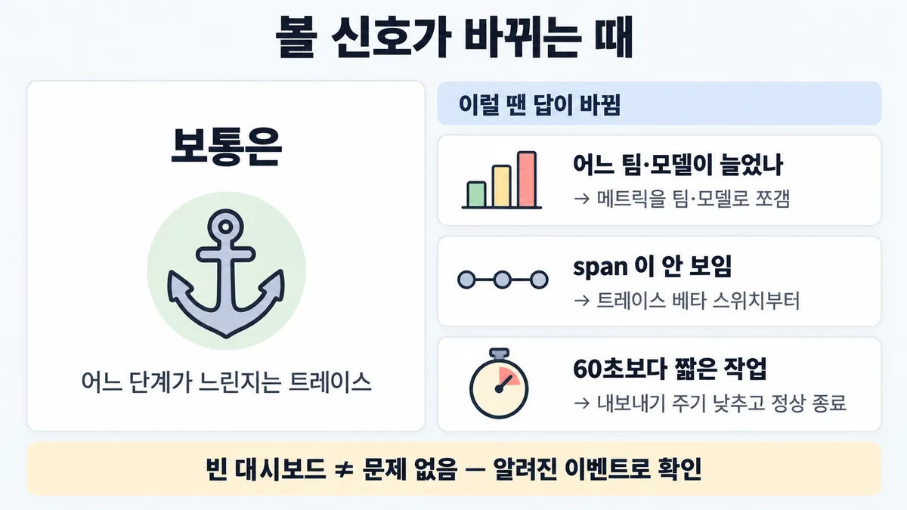

■ observability 세 신호
표시가 없는 문장은 공식 문서에서 확인한 내용이에요. 다른 표시는 읽는 법
왜 배우나 — 시험이 요구하는 것
시험 목표 3.4 대규모 관측 · D3 연결 19%Analyze observability challenges and select monitoring strategies at scale
이 개념으로 푸는 판단 (할 수 있어야 하는 것)
- 3.4① 수천 세션 중 일부만 30초씩 걸린다 — 모델 호출인지 CRM 도구인지 무엇으로 찾나? — 관측 신호 고르기 (메트릭 · 로그 이벤트 · 트레이스)
- 4.6① 비용 급증 알림이 떴다 — 대시보드만 보면 원인이 나오나? (빈 목표) — 모니터링(무엇이 움직였나)과 관측(왜 — 실행 추적)을 구분해 쓰기
한눈에
에이전트 텔레메트리는 서로 독립인 세 신호. 켜는 스위치·내보내는 곳이 따로라 필요한 것만 켬 (Claude Code · Agent SDK 기준. 직접 API 앱은 같은 틀로 내가 계측 — 업계 일반)
메트릭 = 카운터(토큰 · 비용 · 세션 · 코드 줄 · 도구 결정) → 대시보드 · 추세 · 알림. "무엇이 움직였나"
로그 이벤트 = 프롬프트 · API 요청 · API 오류 · 도구 결과마다 구조화 기록 → 감사 · 검색
트레이스 = 한 턴(interaction) 아래 모델 요청 · 도구 호출 · hook span → "이 실행의 어느 단계가 느린가" (베타)
비유 Prometheus(메트릭) · 액세스 로그(이벤트) · X-Ray/Jaeger 분산 추적(트레이스)


ELI5
가게를 살필 때 쓰는 도구 세 개예요.
- 계산대 숫자판은 오늘 손님이 몇 명인지, 매출이 얼마인지 보여 줘요.
- 방문 일지는 누가 언제 무엇을 했는지 한 줄씩 적어요.
- 손님 한 명을 따라가는 영상은 어디서 오래 기다렸는지 보여 줘요.
- "왜 이 손님만 오래 걸렸지?"는 영상을 봐야 알아요.
개념 설명
원리
세 신호는 서로 다른 질문에 답함
- 메트릭 : 숫자를 시간에 따라 모음. "얼마나 · 언제부터 · 어느 모델·팀이" — 추세·알림에 강하고, 한 실행 안의 순서는 모름.
- 로그 이벤트 : 일이 생길 때마다 한 건씩 구조화 기록(프롬프트 · API 요청 · API 오류 · 도구 결과 · 도구 결정). "무엇이 일어났나" — 감사·검색.
- 트레이스 : 한 턴을 뿌리(span)로 두고 그 아래 모델 호출·도구 호출·hook 을 자식으로 붙임. "이 실행에서 어느 단계가 시간을 먹었나".
Claude Code · Agent SDK 에서
- SDK 는 스스로 텔레메트리를 만들지 않고, 안에서 돌리는 CLI 가 OpenTelemetry 로 내보냄. 설정은 환경변수.
- 세 신호는 스위치와 exporter 가 따로 → 필요한 것만 켬.
- 트레이스는 베타(별도 스위치). 서브에이전트 span 은 부모의 도구 span 아래 → 위임(delegation) 사슬이 한 트레이스.
- 앱이 이미 트레이스를 쓰고 있으면
TRACEPARENT로 이어 붙여 앱 트레이스 안에 에이전트 실행이 보임.
표준 지표와 비용
- OTel GenAI 표준(v1.37.0) 지표 다섯 개엔 비용이 없음. 비용은 Claude Code 고유 지표이고 근사치.
내보내기의 함정
- 실패하면 조용히 버림(에이전트는 정상). 주기적으로 묶어 보내서 짧은 작업·강제 종료 때 유실됨.
규칙과 판단


갈림길
①② 어느 신호 [3.4①] [4.6①]
메트릭
카운터(토큰 · 비용 · 세션 · 코드 줄 · 도구 결정) → 대시보드 · 추세 · 알림
트레이스
claude_code.interaction 루트 아래 claude_code.llm_request(모델명·지연(latency)·토큰) · claude_code.tool(권한 대기 span + 실행 span)
로그 이벤트
프롬프트 · API 요청 · API 오류 · 도구 결과마다 구조화 기록
②③ 비용 숫자 [4.6①]
claude_code.cost.usage)
근사치
비용(USD)은 근사치, 청구 정본은 Console 등 제공자
비용은 없음
비용은 Claude Code 고유 지표(claude_code.cost.usage)
④ 빈 대시보드 [3.4①]
베타 변수
트레이스는 CLAUDE_CODE_ENHANCED_TELEMETRY_BETA=1 도
CLAUDE_CODE_ENABLE_TELEMETRY=1 + exporter 둘 다켜기
CLAUDE_CODE_ENABLE_TELEMETRY=1 + 신호별 exporter
아무것도 안 나감
exporter 를 하나도 안 고르면 켜도 아무것도 안 나감
조용한 실패
내보내기 실패는 조용함(에이전트는 정상, 데이터만 버림) → 진단은 CLAUDE_CODE_OTEL_DIAG_STDERR=1 · 프로세스가 죽으면 버퍼에 남은 건 유실
흐름
그림 속 이름·금액·시간·토큰 수는 예시예요. 공식 한도·동작은 카드 본문 값이 기준.
장면 글로 보기
칸 : 에이전트 → 버퍼 → 수집기
블록 : 메트릭, 로그 이벤트, 트레이스
규칙 (버퍼) : 기본 주기 : 메트릭 60초 · 트레이스·로그 5초
질문 : 대시보드가 비어 있으면 에이전트가 안 돈 걸까?
① 켜고 들어옴 확인 ✓
- 시작 : 에이전트 — 쪽지 : CLAUDE_CODE_ENABLE_ / TELEMETRY=1 / + 신호별 exporter
- 메트릭 : 메트릭 → 버퍼 : 신호별 exporter 로 모음 — 쪽지 : claude_code.cost.usage / +0.04 USD
- 타이머 : 버퍼 : 메트릭 60초
- 메트릭 : 버퍼 → 수집기 : 실제로 들어오는지 확인 — 쪽지 : 수집기 수신 / cost.usage 1건
- 끝 : 켠 뒤엔 수집기에 실제로 들어오는지 확인
② 내보내기 실패 ≠
- 시작 : 에이전트 — 쪽지 : CLAUDE_CODE_ENABLE_ / TELEMETRY=1 / + 신호별 exporter
- 메트릭 : 메트릭 → 버퍼 : 에이전트는 정상 — 쪽지 : claude_code.cost.usage / +0.04 USD
- 타이머 : 버퍼 : 메트릭 60초
- 실패 : 버퍼 : 내보내기 실패는 조용함 — 쪽지 : export 오류 / (화면엔 안 찍힘)
- 건너뜀 : 수집기
- 끝 : 에이전트는 정상, 데이터만 버림 — 진단은
CLAUDE_CODE_OTEL_DIAG_STDERR=1
③ 프로세스가 죽음 ≠
- 시작 : 에이전트 — 쪽지 : CLAUDE_CODE_ENABLE_ / TELEMETRY=1 / + 신호별 exporter
- 트레이스 : 트레이스 → 버퍼 : 5초마다 내보냄 — 쪽지 : span claude_code.tool / 3.1초
- 죽음 : 에이전트 : 주기 전에 강제 종료 — 쪽지 : kill -9
- 건너뜀 : 수집기
- 끝 : 프로세스가 죽으면 버퍼에 남은 건 유실
나머지 규칙
-
무엇을 기록하나(본문 opt-in · 사용자 귀속) = ■ 텔레메트리 기록 범위
규칙 원문 ①②③④ (갈림길로 그린 규칙)
-
일부 실행만 느림 · 모델인지 도구인지 모름 → 트레이스.
claude_code.interaction루트 아래claude_code.llm_request(모델명·지연·토큰) ·claude_code.tool(권한 대기 span + 실행 span) [3.4①]서브에이전트의 span 은 부모의
claude_code.toolspan 아래 붙음 → 위임(delegation) 사슬이 한 트레이스여러 호출을 한 줄로 보려면
session.id로 거름 · 내 앱 트레이스 안에 넣으려면 W3C trace context(TRACEPARENT)가 자동 전파(SDK ·claude -p만, 대화형 CLI 는 무시) -
추세 · 비용 알림 → 메트릭. 토큰은 종류·사용자·팀·모델별로 쪼개 봄. 비용(USD)은 근사치, 청구 정본은 Console 등 제공자 [4.6①]
-
표준 OTel GenAI 지표(semconv v1.37.0) = 토큰 사용량 · 작업 시간 · 서버 요청 시간 · 출력 토큰당 시간 · TTFT. 비용은 없음 → 비용은 Claude Code 고유 지표(
claude_code.cost.usage) -
켜기 :
CLAUDE_CODE_ENABLE_TELEMETRY=1+ 신호별 exporter. 트레이스는CLAUDE_CODE_ENHANCED_TELEMETRY_BETA=1도exporter 를 하나도 안 고르면 켜도 아무것도 안 나감 · 베타 플래그는 트레이스에만 필요(메트릭·이벤트는 없어도 됨)
내보내기 실패는 조용함(에이전트는 정상, 데이터만 버림) → 수집기에 실제로 들어오는지 확인, 진단은
CLAUDE_CODE_OTEL_DIAG_STDERR=1기본 주기 : 메트릭 60초 · 트레이스·로그 5초. 프로세스가 죽으면 버퍼에 남은 건 유실
더 깊이 : 판단 규칙 · 상황 변수 (설명)
판단 규칙
| 조건 | 답 | 근거 |
|---|---|---|
| 일부 세션만 느림 · 모델인지 도구인지 모름 | 트레이스 (interaction 아래 llm_request · tool span) | monitoring-usage · agent-sdk/observability |
| 서브에이전트까지 포함한 위임 사슬을 보고 싶음 | 트레이스 — 서브 span 이 부모 tool span 아래 | agent-sdk/observability |
| 비용·토큰 추세, 어느 모델·팀인지 | 메트릭 (claude_code.token.usage · claude_code.cost.usage) | monitoring-usage |
| 청구 금액이 정확해야 함 | 제공자(Console 등) 청구 데이터 | monitoring-usage "Cost metrics are approximations." |
| 표준 OTel GenAI 지표만으로 비용까지 | 안 됨 — 표준 다섯 지표에 비용 없음 | OTel semconv v1.37.0 gen-ai-metrics |
| 누가 어떤 도구를 불렀나 | 로그 이벤트 (→ ■ 텔레메트리 기록 범위) | agent-sdk/observability |
| 텔레메트리를 켰는데 수집기에 안 들어옴 | 진단 변수로 exporter 오류 확인 (기본은 조용히 버림) | agent-sdk/observability |
| 에이전트 실행을 앱 트레이스 안에 | W3C trace context 자동 전파 (SDK · claude -p) | agent-sdk/observability |
상황 변수
| 변수 | 값 | 답 쪽 | 등급 | 근거 |
|---|---|---|---|---|
| 질문 모양 | "얼마나 · 언제부터 늘었나" | 메트릭 | agent-sdk/observability | |
| 질문 모양 | "이 실행의 어디가 느린가" | 트레이스 | agent-sdk/observability | |
| 질문 모양 | "누가 무엇을 했나" | 로그 이벤트 | monitoring-usage | |
| 트레이스 스위치 | 안 켬 (CLAUDE_CODE_ENHANCED_TELEMETRY_BETA) | span 없음 → 메트릭·이벤트만 | agent-sdk/observability | |
| 실행 방식 | 대화형 CLI | 들어오는 TRACEPARENT 무시 | agent-sdk/observability | |
| 작업 길이 | 메트릭 주기(60초)보다 짧음 | 종료 flush 에 기댐, 강제 종료면 유실 | 계산 | 뒤집히는 때 3 |
| 에이전트 여러 개가 한 수집기 | service.name · resource attribute 로 구분 | 확인 | agent-sdk/observability | |
| 앱 형태 | Claude Code·SDK 가 아닌 직접 API 앱 | 같은 세 신호 틀로 내가 계측 | 업계 일반 | — |
연습 문제
운영팀이 CLAUDE_CODE_ENABLE_TELEMETRY=1 과 exporter 를 설정해 텔레메트리를 켰다켰음. 그런데 일주일째 대시보드에 메트릭도 이벤트도 하나도 안 뜬다전부 비었음. 에이전트는 평소처럼 잘 돈다. 누군가 "오류가 0건이니 문제 없다"고 한다. 먼저 의심할 것은?
시험 대비
함정
- "p99 대시보드(메트릭)를 보면 원인이 나온다" → 메트릭은 무엇이 움직였는지까지, 어느 단계인지는 트레이스
- "OTel GenAI 표준 지표로 토큰·비용·지연을 한 번에" → 표준엔 비용 없음
- 비용 메트릭을 청구 근거로 씀 → 근사치
- "대시보드에 아무것도 안 뜨니 문제 없음" → 내보내기 실패가 조용히 삼켰을 수 있음
- 트레이스를 정식 기능으로 가정 → 베타, span 이름·속성이 바뀔 수 있음
신호
"The CLI exports three independent OpenTelemetry signals."
"Each user prompt starts a claude_code.interaction root span. API calls, tool calls, and hook executions are recorded as its children."
"Cost metrics are approximations."
"The CLI fails silently on export errors by default"
"Adding full production tracing let us diagnose why agents failed and fix issues systematically." (멀티 에이전트 연구 글)


더 깊이 : 뒤집히는 때 · 오답 재료 (설명)
뒤집히는 때
1. 메트릭이 답인 때
- 조건 : "지난주보다 토큰 비용이 30% 늘었다 — 어느 팀·어느 모델인가".
- 판단 : 한 실행의 순서가 아니라 집계를 묻는 것 → 메트릭을 팀·모델로 쪼갬. 트레이스는 원인 실행을 찾은 다음 단계.
- 근거 : monitoring-usage (type · user · team · model 로 분해)
2. 트레이스를 골랐는데 span 이 안 보이는 때
- 조건 : 트레이스 exporter 만 설정하고 베타 스위치를 안 켬, 또는 대화형 CLI 세션에서 앱의
TRACEPARENT를 기대함. - 판단 : 트레이스는
CLAUDE_CODE_ENHANCED_TELEMETRY_BETA=1이 필요, 대화형 CLI 는 들어오는 trace context 를 무시. "트레이스가 답"인 지문에서도 설정 전제가 빠지면 보기가 틀릴 수 있음. - 근거 : agent-sdk/observability
3. 짧은 작업의 메트릭이 비는 때
- 조건 : 20초짜리 배치 작업을 컨테이너로 돌리고, 끝나면 바로 죽임.
- 계산 : 메트릭 기본 주기 60초 > 작업 20초 → 첫 주기 전에 끝남. 정상 종료면 flush 를 시도하지만 짧은 시간 제한이 있고, 강제 종료면 버퍼가 통째로 유실.
- 처방 : 내보내기 주기를 낮춤 (예
OTEL_TRACES_EXPORT_INTERVAL1000ms 류) · 정상 종료. - 등급 : 계산 (60초 · 5초 · 유실 규칙은 확인)
- 근거 : agent-sdk/observability
4. "아무것도 안 뜬다 = 문제 없음"이 틀리는 때
- 조건 : 대시보드에 오류 0, 트레이스 0.
- 판단 : exporter 오류는 기본적으로 조용히 버려짐. 먼저 수집기에 알려진 이벤트 하나가 들어오는지(양성 대조) 확인.
- 근거 : agent-sdk/observability
오답 재료
| 오답 | 왜 끌리나 | 왜 틀리나 | 등급 | 근거 |
|---|---|---|---|---|
| "토큰·지연(latency) 대시보드(메트릭) p99 를 보면 원인이 나온다" | p99 가 튄 게 보이니까 | 메트릭은 무엇이 움직였는지까지. 어느 단계인지는 트레이스 | agent-sdk/observability | |
| "OTel GenAI 표준 지표 세트로 토큰·비용·지연을 한 번에" | 표준이면 다 있을 것 같음 | 표준 v1.37.0 에 비용 지표 없음 | OTel semconv v1.37.0 gen-ai-metrics | |
| "비용 메트릭을 청구 대사에 쓴다" | USD 단위로 나오니까 | 근사치. 청구 정본은 제공자 | monitoring-usage | |
| "알림 임계값을 더 촘촘히 하면 원인을 안다" | 빨리 알면 빨리 고침 | 알림은 무엇이 움직였는지만. 원인은 실행 추적 | 업계 일반 | 목록 4.6① 매력적인 오답 |
| "로그를 다 남기면 트레이스는 필요 없다" | 로그에 다 있을 것 같음 | 이벤트는 건별 기록, 단계 간 부모-자식·시간 관계는 트레이스 | monitoring-usage | |
| "서브에이전트 호출은 별도 트레이스로 흩어진다" | 다른 에이전트니까 | 부모 tool span 아래 붙어 한 트레이스 | agent-sdk/observability |
참고
출처
- 가이드 목표 3.4 공식 시험 가이드 v1.0
- 가이드 목표 4.6 공식 시험 가이드 v1.0
- agent-sdk/observability
- monitoring-usage
- OTel semconv v1.37.0 gen-ai-metrics
- multi-agent-research-system
상태
- 업계 일반 1줄(직접 API 앱 계측)
미해결
- OTel GenAI semconv 는 v1.37.0 만 확인. 더 새 판에 비용 지표가 생겼는지는 안 봄 (목록 3.4① 도 "새 저장소 최신 판은 근거 확인 필요").
- 직접 Messages API 로 만든 앱의 observability(관측 가능성 : 요청 ID · usage 필드 기록 등)는 받은 원문 밖 — 업계 일반으로만 둠.
- Managed Agents 는 Console 세션 뷰어(타임라인 · 도구별 통계 · 스레드별 활동)가 있음 (릴리스 노트) — 이 카드의 OTel 세 신호와 관계는 원문을 안 받아 미확인.
- 조직 비용 분해(Usage & Cost Admin API)는 목록 4.6① 소재 — 원문 안 받음, 4.6 카드 몫.